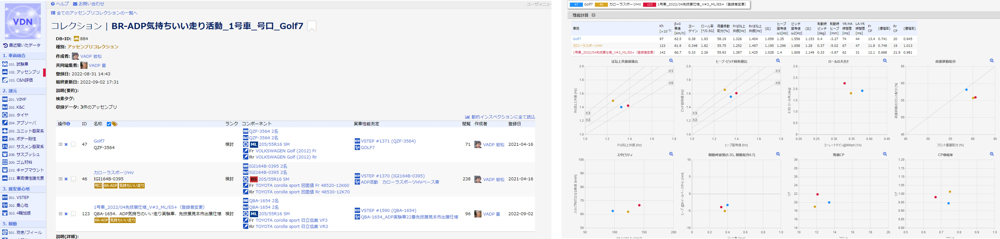

FND22 プログラミング基礎 プレゼンテーション
■ 受講のきっかけ
現場を理解したマネージャーになりたい
- 年々、実務から遠ざかっていくが、本当にこのままでいいのか？
- 「知っている / 見てわかる / 自分で出来る」には大きな壁がある
- 自分で手を動かした経験を持った上で、技術戦略を立てられるようになりたい
フロントエンドを作成する技術を身につけたい
- これまではMATLABの経験しかなく、バックエンドでの計算にプログラミングを使ってきた
- 年々増える使いやすいwebアプリを自分で作れるようになりたい
- 自Grで開発している下記のwebアプリの開発に従事できるようになりたい

■ 講義を通して学んだこと
プログラミングの前の設計が大切
- コードを書く前に、これから作るものを自分の口で言語化できるか？
- 言語化できなければ、必要な関数、引数、返り値は宣言できない
具体化 -> 抽象化 -> 具体化 -> の繰り返しで身につける
- 講義を通して、手を動かしてトライすることの重要性を学んだ。コード間違っても爆発はしない
- 具体例で動きを学んだら、その動きを抽象化して捉える。この反復が応用に聞いてくる（特に高階関数で痛感）
プログラミング言語もどんどん進化している
- for文やif文の力技で出来てしまうことも、一つのfor文で出来てしまうことを知った
- 積極的に新しい知識を学ぶことは、効率化にも繋がる
■ 最終プレゼンに向けて
何を作るか？
- webページで、ユーザー操作によるアクションをベースにしたものを作りたい
- 講義で学んだjsでhtmlを操作すること、cssでレイアウトを変更することは取りこみたい
工夫したところ
- クリックによるイベントを活用
- 文章やボタン配置などを綺麗に置けるようなコードにトライ
- バックエンドでは学んできた関数を活用
苦労したところ
- jsからhtmlを操作する際の関数の書き方
- イベントに対応した変数の持たせ方
やりきれていないこと
- cssの効率的な書き方 → リファクタリングしたい
- webページ全体の見た目 → もっと綺麗に、もっとお洒落に、もっとわかりやすく！
- バトルの中身 → HPで終了にしたい
- お助けボタン → HP回復、攻撃力UPなどイベント追加したい
■ 開発したアプリ